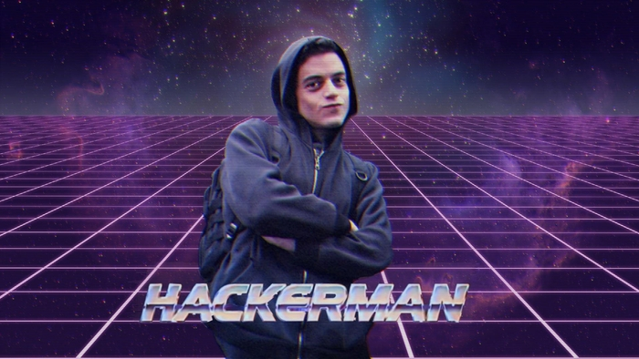

Piotr Krzemiński
Przyszedłem do tej szkoły z zamiłowania do matematyki oraz z chęcią nauki programowania
Doświadzczenie ze szkoły podstawowej:
a) W szkole podstawowej głównie zajmowałem się excelem i scratchem
b) Pod koniec 8 klasy zacząłem uczyć się pythona
Moje oczekowania:
1. Przede wszystkim chciałbym poznać jezyki programowania p: java, c++, html
2. Chciałbym również robić gry na komputer i telefon
Co chciałbym robić w przyszłosci?
W przyszłości chciałbym zostać IT managerem lub tworzyc gry
